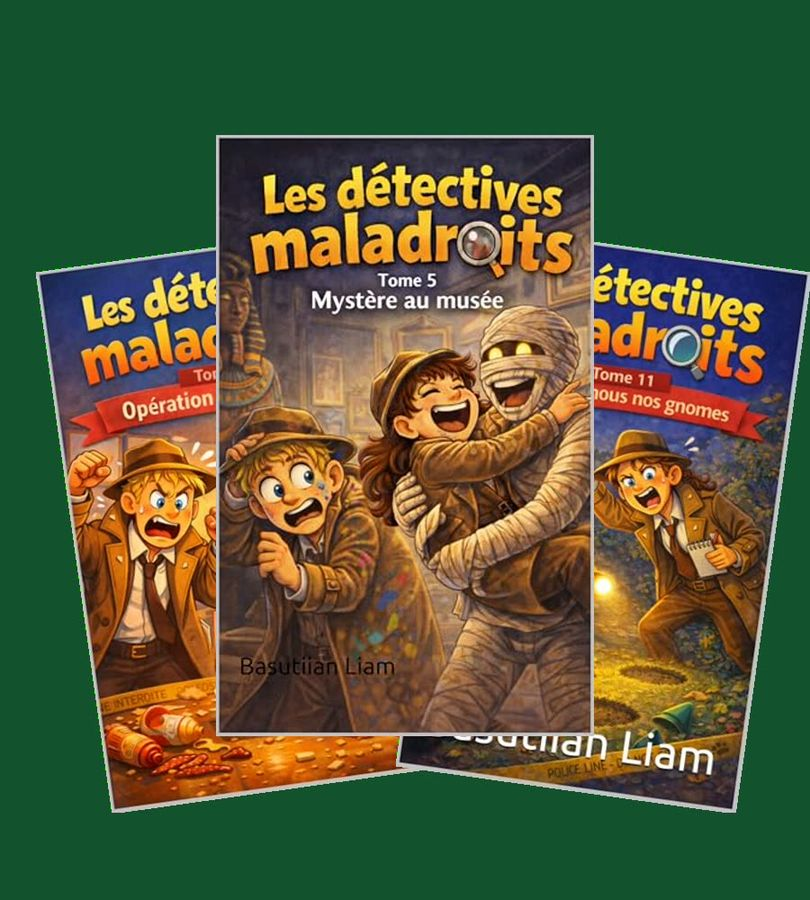
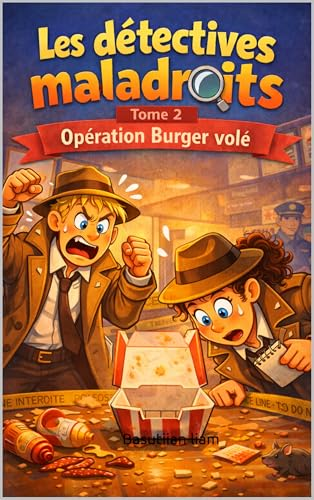
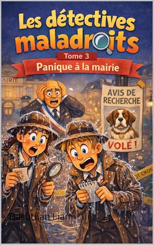
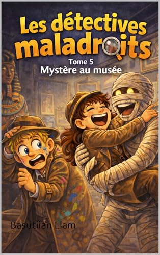
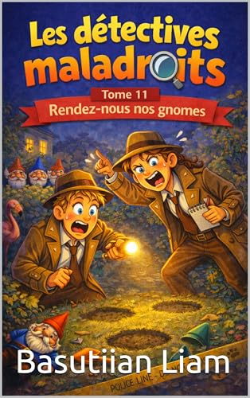

Lucie et Bastien, deux détectives aussi attachants que catastrophiques, enchaînent les enquêtes loufoques : burgers volés, gnomes kidnappés, momie au musée. 19 tomes, chacun se lit seul.
🎄 Livré pour Noël : commandez avant le 14 décembre

Chaque tome est une enquête complète, avec des quiproquos, des courses-poursuites et des catastrophes en série. On rit beaucoup, on tourne les pages pour savoir qui est le coupable, et l'amitié entre Lucie et Bastien donne aussi de jolis moments d'émotion.
Pas besoin de lire dans l'ordre : on peut commencer par n'importe quel tome. C'est idéal pour offrir un livre à un enfant qui n'aime pas encore lire : des chapitres courts, de l'humour, et l'envie de lire le suivant.
Pour un premier tome, choisissez une enquête courte et très drôle :

Le plus court : tous les burgers de la ville disparaissent. Parfait pour se lancer.
Lire le résumé →
La première vraie mission : retrouver Spooky, le chien du maire.
Lire le résumé →
Une chaussette égyptienne volée, des momies qui bougent… et Bastien terrifié.
Lire le résumé →
Des gnomes de jardin disparaissent dans tout le quartier. Absurde et touchant.
Lire le résumé →Un enfant qui a aimé un tome voudra la suite. Offrir 2 ou 3 tomes sous le sapin, c'est l'assurance de longues soirées de lecture. Tous les tomes sont disponibles en livre broché et en Kindle, vendus et livrés par Amazon.
Non, chaque tome est une enquête complète : on peut commencer par n'importe lequel.
Oui, en livre broché et en Kindle, vendus et livrés par Amazon.
Les détectives maladroits sont écrits par Basutiian Liam.